.NET in the Box
Spartakiade 2017
Frank Pommerening
- Senior - Softwareentwickler
- Consultant
- Softwarearchitekt
frank@pommerening-online.de
Gründung: Mai 2012
Anzahl Mitarbeiter: 8 feste
Branchenfokus: Energiebranche
- Consulting (fachlich & IT)
- Requirements Engineering / Projektmanagement
- IT-Fachprozess-Analyse / Dokumentation
- Software-Entwicklung
- Microservices, SOA, REST, OOA und OOD
- Microsoft Technologien z.B. .NET (C#), WPF, WCF
- Datenbanken (MS SQL Server / Oracle / MongoDB)
Docker im Überblick
Was ist Docker?
Anwendungsvirtualisierung: Anwendungen werden unter Verwendung von Betriebssystemvirtualisierung in Containern isoliert ausgeführt.Buzzword-Bingo:
- Microservices
- DevOps
- CI / CD (Continuous Integration / Continuous Deployment)
- XaaS (Anything as a Service)
- Portablität
Virtualisierung vs. Container
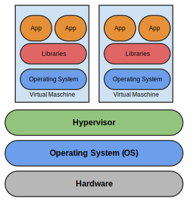Images
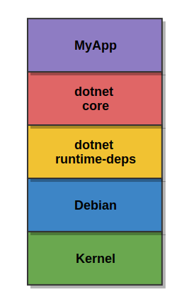- Template für Container
- Snapshot / Archiv
- Readonly und versioniert
- Ebenenprinzip (Speicherung nur Differenzen)
Container
- Laufende Instanz eines Image
- nur zur Laufzeit existent
- Schreibbare Schicht wird
oberhalb des Image bereitgestellt
Docker-Ökosystem
Docker umfasst mehr als die Ausführungsumgebung für Container:| Compose | Verwalten von Anwendungsstacks |
| Hub | (öffentliche) Docker-Registry |
| Swarm / Swarm Mode | Verwaltung von Container in Clustern |
| Cloud | Hostinganbieter |
| Maschine | Bereitstellung von Docker-Hosts |
| Store | Bereitstellung zertifizierter Images |
| Kinematic | Grafisches Verwaltungswerkzeug |
Docker unter Linux
Alles neu - NEIN Verwendung von erprobten Technologien des Linux-Kernel
- LXC (BSD Jails / Solaris Zonen / OpenVZ)
- Cgroups
- Ressourcenlimits
- CPU-Zeit, Speicher, IO ...
- Namespaces
- Simulation geschlossener Umgebungen
- Hostnamen, Netzwerk, Prozesse ...
- chroot (Verbindung des Mountpunkt)


- Arch Linux
- CentOS
- Red Hat Enterprise Linux
- openSUSE / SUSE Linux Enterprise
- Ubuntu
- ...
 Spezielle Docker-Host Distributionen
Spezielle Docker-Host DistributionenWindows Container
- Partnerschaft zwischen Microsoft und Docker seit 2014
- Container-Technik enthalten in
- Windows Server 2016
- Windows 10 Professional / Enterprise (ab Anniversary Update)
- Unterstützung des kompletten Ökosystems (Hub / Compose / Swarm)
- Docker-Integration Visual Studio 2017
- Azure Container Services
- SQL-Server als Linux-Container
Isolation
Windows Container vs. Hyper-V Container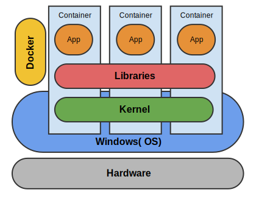 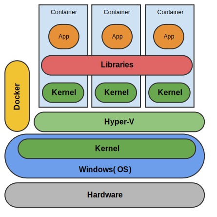
Basisimages
- Bereitstellung über Dockerhub
- microsoft/windowsservercore
- Unterstützt Großteil der Windows Server Anwendung
- IIS
- SQL-Server
- .net Framework (full)
- 5 GB (komprimiert)
- microsoft/nanoserver
- Minimale Windows Version
- IIS 10
- .net Core
- 333 MB (komprimiert)
Docker - Grundlagen
Informationen
Docker-Host
docker info [OPTIONS]den Host (OS / CPU / RAM ...).
Container
docker ps [OPTIONS] | -a / --all | zeigt Informationen zu allen, auch inaktiven, Containern |
| -l / --latest | zeigt Informationen zum letzten erstellten Container |
Container-Operationen
Erstellung
docker run [OPTIONS] IMAGE[:Tag] [COMMAND]| Name | --name [Name] (muss eindeutig im Host sein) |
|---|---|
| Startverhalten | -it (interaktives Terminal) /-d (Hintergrunddienst) |
| Volumen-Mapping | -v Quellpfad:Zielpfad |
| Port-Mapping | -p Container-Port:Host-Port |
| Endverhalten | -rm Container direkt entfernen |
Starten
docker start [OPTIONS] CONTAINER| -a / --attach | Verbindung mit der Standardausgabe herstellen. |
| -i / --interactive | Verbindung mit der Standardeingabe herstellen. |
Stoppen
docker stop [OPTIONS] CONTAINER| -t / --time | Zeit, in Sekunden, bis Container gekillt wird. |
Verbindung herstellen
docker attach [OPTIONS] CONTAINERLöschen
docker rm [OPTIONS] CONTAINER| -f / --force | Bricht den noch laufenden Container ab |
| -v / --volumes | Löscht die mit dem Container verbundenen Volumes |
Log-Meldung anzeigen
docker logs [OPTIONS] CONTAINERImage-Operationen
Anzeige
docker images [OPTIONS]| -a / --all | Zeigt alle, auch Zwischencontainer, an |
| -f / --filter | Filtert die Liste |
Herunterladen / Aktualisieren
docker pull [OPTIONS] [Registry]IMAGENAMEdocker pull myregistry.local:5000/myuser/myimageLöschen
docker rmi [OPTIONS] | -f / --force | Erzwingt das Löschen |
Erstellung aus Container
docker commit [OPTIONS] CONTAINER [REPOSITORY[:TAG]]| -a / --author | Ersteller |
| -m / --message | Commit message |
Übertragung zur Registry
docker push [OPTIONS] [Registry]IMAGENAME[:TAG] Docker-File
Ist eine Auszeichnungssprache (ML) für den Aufbau eines Docker-Images.
Die Speicherung erfolgt als Textdatei.
FROM Basisimage[:TAG]
Imagename ggf. mit Tag auf welchem das eigene Image basieren soll
FROM ubuntu:16.10
LABEL maintainer Email
E-Mail-Adresse des Autors
LABEL maintainer "max@mustermann.de"Veraltet: MAINTAINER
MAINTAINER Max Mustermann "max@mustermann.de"
RUN COMMAND
Befehl zur Ausführung im Container z.B. Installieren von Software.
RUN apt-get update
ENV VARIABLENNAME Wert
Definiert Variablen z.B. die Version oder das Datum der Aktualisierung, die auch innerhalb der Befehle verwendet werden können.
ENV REFRESHED_AT 2017-01-25
EXPOSE Portnummer
Definiert Ports, welche durch das Image bereitgestellt werden.
EXPOSE 8080
VOLUME Pfad
Definiert Volume (Verzeichnis), welche durch das Image bereitgestellt wird.
VOLUME ["/mydata"]
COPY Quellpfad Zielpfad
Kopiert Ordner / Dateien in das Image
COPY /Publish /MyApp
ADD Quellpfad / URL Zielpfad
Kopiert Ordner / Dateien in das Image.
Kann auch eine URL oder eine tar-Datei sein.
COPY /Publish /MyApp
WORKDIR Pfad
Definiert den Einstiegspfad für die Ausführung innerhalb des Containers.
WORKDIR /MyApp
ENTRYPOINT [COMMAND, ARGS]
Definiert den Startbefehl des Images inkl. Parameter.
ENTRYPOINT ["npm", "rum", "testapp"]
CMD COMMAND
Definiert den Startbefehl des Images inkl. Parameter.
Ein Überschreiben ist möglich.
CMD ["npm", "rum", "testapp"]Beispiel
FROM fpommerening/spartakiade2017-rabbitmq:core-base
LABEL maintainer "frank@pommerening-online.de"
ENV REFRESHED_AT 2017-01-31
ENV Picflow_VERSION 0.0.1
COPY /app /home/
RUN set -x \
&& p7zip -d /home/picflow-webapp.7z \
&& mv /picflow-webapp/ /app/ \
&& apt-get purge -y --auto-remove ca-certificates wget p7zip
WORKDIR /app/
EXPOSE 5000
ENTRYPOINT ["dotnet", "WebApp.dll"]
Empfehlungen
- Installiere nur notwendige Pakete
- Jeder Container hat nur einen Zweck
- Minimiere die Anzahl der Ebenen
- Sortiere Argumente
- Nutze .dockerignore - File
- apt-get update / apt-get install immer in einem Befehl
- Verwende Pipes
Hauptziele: Übersicht erhöhen / Imagegröße reduzieren
Build .Net Core App
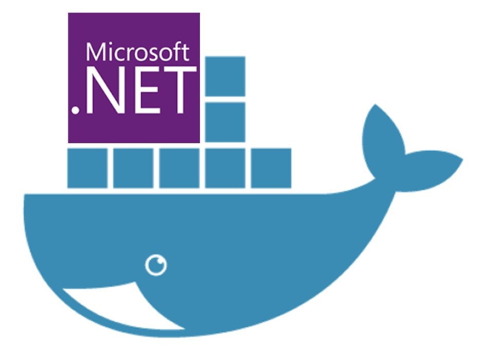Build inside
Die Anwendung wird im Container während der Imageerstellung gebaut.| Vorteile | Nachteile |
|---|---|
|
|
Build outside
Die Anwendung wird unabhängig vom Container erstellt. Die entstandenen Artefakte werden bei der Imageerstellung kopiert.| Vorteile | Nachteile |
|---|---|
|
|
Networking
Legacy container links
$ docker run -d --name mongodb mongo
$ docker run -d --name apache link data:mongodb webapp
VERALTET
Das Networking löst das Konzept der Links zwischen Containern ab!
- none (null)
- host (host)
- bridge (bridge)
Neue Container (außer Swarm / Compose) werden, soweit nicht anders definiert, dem Netzwerk bridge zugeordnet.
Netzwerktreiber (Driver)
- null: kein Netzwerk
- host: nur Verbindungen zwischen Containern und dem Host.
- bright: Container wird Teil des physischen Netzwerks des Hosts. Er kann von außen erreicht werden.
- overlay: Hostüberspannendes Netzwerk z.B. für Swarm
Netzwerk anzeigen
docker network ls [OPTIONS]Netzwerkdetails anzeigen
docker network inspect [OPTIONS] NETWORKNetzwerk erstellen
docker network create [OPTIONS] NETWORK| -d/--drive | Netzwerktreiber (none, host, bridge ...) |
| --subnet | Subnetz z.B. 192.168.235.0/24 |
| --ip-range | Definiert den zu vergebenden IP Bereich |
| -o/-opt | Key / Value - Eintrag für spezielle Einstellung z.B. com.docker.network.driver.mtu": "1500" |
| --label | Metadaten für das Netzwerk |
| --ipv6 | aktiviert / deaktiviert IPv6 |
Docker-Compose

Zusammenfassung mehrerer Container zu einem Anwendungsstack
Compose-File
Eine yaml bzw. yml - Datei, welche die Struktur und Konfiguration des Anwendungsstacks definiert. Standard: docker-compose.ymlVersionen / Formate: Ohne Angabe im Header gilt Version 1!
| Format / Version | Docker-Version | Hinweise |
|---|---|---|
| 3.0; 3.1 | 1.13.0+ | Empfohlene Version (Erlaubt Verknüpfung mit Docker Swarm Mode) |
| 2.1 | 1.12.0+ | |
| 2.0 | 1.10.0+ | |
| 1.0 | 1.9.1+ | in zukünftiger Version deprecated / veraltet |
Service-Definition
Jeder Container des Anwendungsstacks ist ein Service. Deren Eigenschaften wie Name, Abhängigkeiten etc. werden im Bereich services beschrieben.
Herkunft Images
BUILD
Image wird erst während des Starts erstellt.
build:
context: ./webapp
dockerfile: Dockerfile.local
image: webbapp:latest
Vorhandenes Image
gleiches Format wie beim FROM-Klausel des Dockerfile
image: user/web:latest
Portfreigaben
Port-Container:Port-Host
ports:
- 5000:5000Hostname
hostname:Webserver1Abhängigkeiten
Es werden die (Alias)name der Services verwendet.
depends_on:
- dbserverUmgebungsvariable / Einstellungen
Format: KEY:VALUE
environment:
- setting1:value1
- setting2:value2Datenspeicher
Datenspeicher werden zusätzlich im Bereich volumes definiert.
volumes:
- data1:/app/dataNetzwerkzuordnung
Netzwerke werden zusätzlich im Bereich networks definiert.
networks:
- frontendNetzwerk-Definition
Die Definition der Netzwerke erfolgt innerhalb des Bereichs networks.Treiber
z.B. bridge oder overlay
driver: overlayOptionen
driver_opts:
- opt1: "val1"Datenspeicher-Definition
Die Definition der Datenspeicher erfolgt innerhalb des Bereichs volumes. Sie orientiert sich an der Volume-Defintion .Treiber
i.d.R. Local
driver: overlayOptionen
driver_opts:
- opt1: "val1"Beispiel
version: "3"
services:
database:
image: mongodb:3.2
volumes:
- data:/var/mongo/data
networks:
- backend
webapp:
build:
context: ./webapp
ports: 5000:80
environment:
- DbConnectingString=mongodb://database
networks:
- backend
- frontend
networks:
backend:
frontend:
volumes:
data:Anwendungsstack-Operationen
docker-compose [SUBCOMMAND] [OPTIONS] | Subbefehl | Optionen | Hinweise |
|---|---|---|
| pull | Lädt die im Anwendungsstack enthalten Images herunter | |
| create | --no-cache [SERVICE...] | Erstellt das Image bzw. den alle Images des Stack |
| up | -d [SERVICE] --build |
Erstellt / Lädt herunter / Startet einen Service inkl. Abhängigkeiten oder den gesamten Stack |
| start | [SERVICE] | Startet einen Service |
| Subbefehl | Optionen | Hinweise |
|---|---|---|
| stop | -t (timeout in s) [SERVICE] | Beendet einen Service |
| down | --rmi / -v | Stoppt und entfernt Container, Netzwerke, images und Volumes |
| rm | -v | Entfernt, nach Bestätigung, gestoppte Container und ggf. Volumes |
| exec | SERVICE COMMAND | Führt den übergeben Befehl im Service aus |
| top | [SERVICE] | Zeigt die Prozesse des Service bzw. des Anwendungsstack an |
Containerfertige .Net (Core) App
Konfiguration / Einstellungen
- Einfache Implementierung in .NET Anwendung
- Gute Integration in Docker-Ökosystem
- Plattformabhängigkeit
- Support von verschiedenen Umgebungen: Entwicklung, Test und Produktion
| Ungeeignet | Alternativen |
|---|---|
| Registry | Zentrale Service-Discovery |
| Config-Dateien | Environment Variables |
Logging JA
Datei NEIN
Console JA
aber formatiert
Vorteile:
- Kein Problem mit verteilte Umgebung
- Gute Integration ins Ökosystem
- Einfach zu implementieren
Microservice mit .net
- Verwendung eines gemeinsamen Basisimage
- Gleiche Version von .net und Abhängigkeiten für alle Serviceimages
- Geringere Build-Zeiten
- Infrastruktur-Container ggf. trotz Abhängigkeit noch nicht verfügbar (Reliability / Retry)
- Build outside bevorzugen
- Linux-Container besser auf Linux statt Windows-Host erstellen
Docker auf Raspberry PI 3
Installation
Hypriot OS
Hypriot OS ist eine spezielle Distribution für Docker auf ARM-Geräte. Sie war bereits vor dem offiziellen Support durch Docker verfügbar.Raspbian Jessie Lite
Docker unterstützt nun die ARM-Plattform offiziell. Es kann deshalb auf der Distribution Raspbian der Raspberry Foundation installiert werden.curl -sSL get.docker.com | sh
sudo usermod -aG docker pi
sudo systemctl enable docker
sudo systemctl start dockerBuild .net App
Die Unterstützung der ARM-Plattform für .net core ist noch in Entwicklung. Deshalb sollte man aktuell auf Mono von Xamarin / Microsoft zurückgreifen.Images die auf x86/x64 erstellt wurden, sind auf dem Raspberry nicht lauffähig!
Verwendung spezieller Basisimages erforderlich
- resin/rpi-raspbian
- resin/raspberrypi3-debian
- yyolk/rpi-archlinuxarm
- ioft/armhf-ubuntu
GitHub + Docker Hub
- Accounts bei GitHub und Docker Hub existieren
- Quellcode inkl. Dockerfile ist in einem Repository auf GitHub vorhanden
Verbindung GitHub und Docker Hub
- Login bei Docker Hub
- Profil -> Setting -> Linked Accounts & Services
- Auswahl des Zugriffs
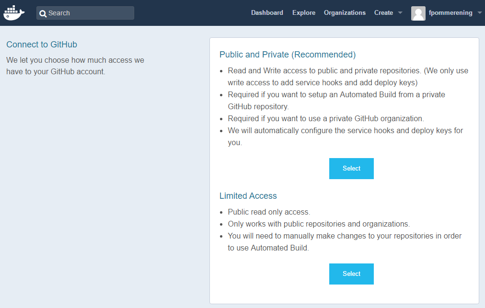
- Autorisierung des Zugriffs
- Bestätigung mit GitHub-Kennwort
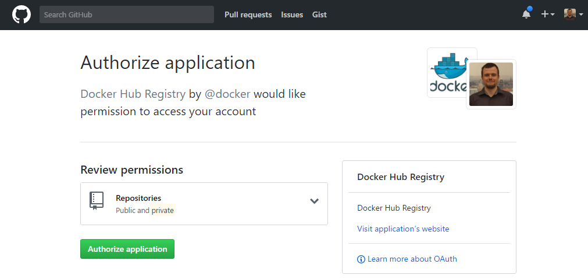 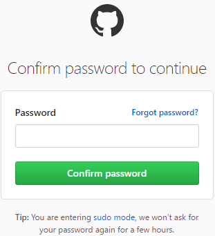
Automatischer Build
- Login bei Docker Hub
- Create -> Create Automated Build
- Auswahl Herkunft Quellcode (GitHub oder Bitbucket)
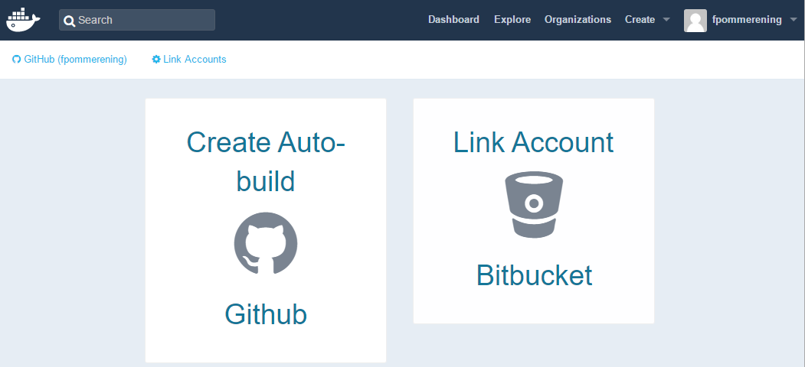
- Auswahl des Quell-Repository
- Konfiguration Docker Hub-Repository
- Namespace (Fix: Benutzer)
- Name (Default: Name des GitHub-Repository)
- Sichtbarkeit (Default: Öffentlich)
- Kurzbeschreibung (Pflichtfeld)
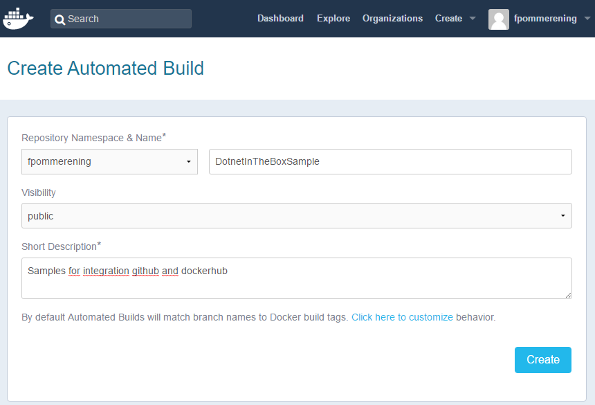
- Anpassung Build-Einstellungen (Build-Settings)
- Pfad zum Dockerfile
- Definition Tags
- Verwendete Git-Branches
- Prüfung Build (Build Details)
Docker Swarm / Docker Swarm Mode
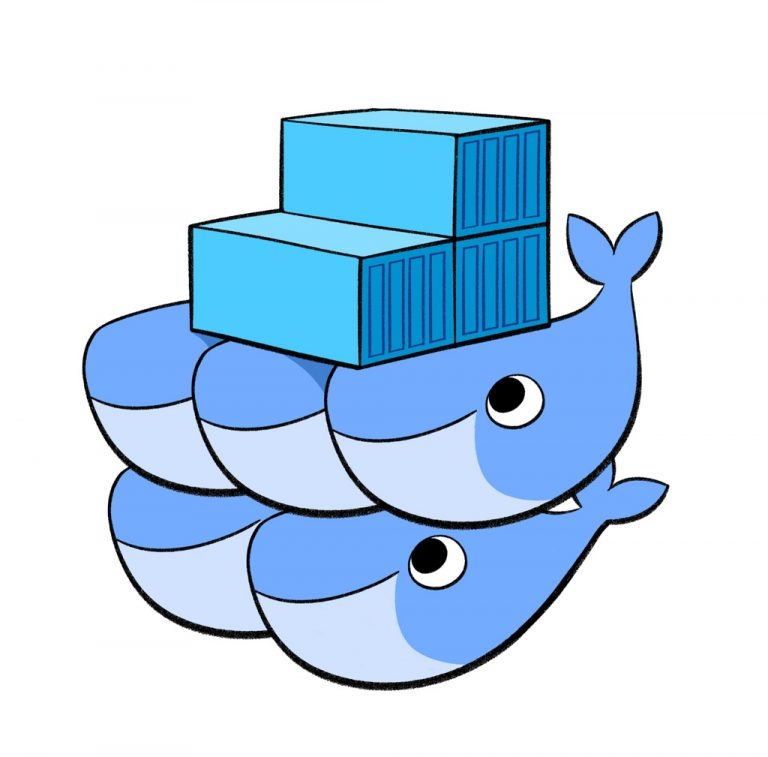Container-Cluster über mehrere Docker-Hosts
Docker Swarm Visualizer
Das Tool Docker Swarm Visualizer gestattet eine Übersicht der laufenden Services und Hosts.
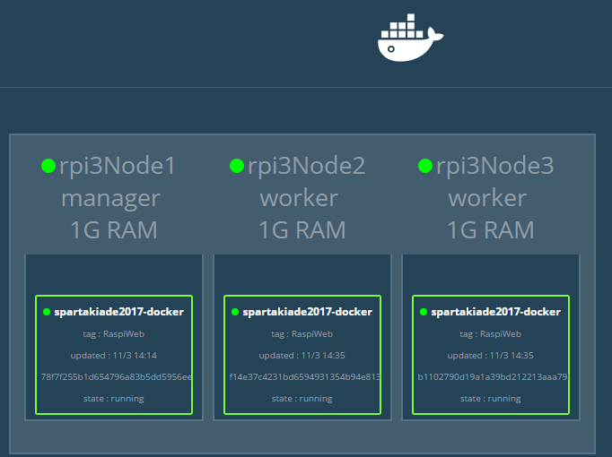
Lizenz: Apache GitHub
Verfügbare Container:
- Linux x64: manomarks/visualizer
- Linux arm: alexellis2/visualizer-arm
- Windows: stefanscherer/visualizer-windows
Docker Swarm
Cluster / Swarm initalisieren
docker swarm init [OPTIONS] Nach erfolgreicher Erstellung werden der Token und Befehl zum Hinzufügen angezeigt.
Knoten hinzufügen
docker swarm join [OPTIONS] HOST:PORT-- token Zugriffstoken
Knoten entfernen
docker swarm leave [OPTIONS]--force, -f Erzwingt das Verlassung und ignoriert Warnungen WICHTIG: die Node muss noch mein Manager abgemeldet werden!
Zugriffstoken anzeigen
docker swarm join-token [OPTIONS] (worker|manager)Cluster / Swarm aktualsieren
docker swarm Update [OPTIONS]Docker Node
Knoten anzeigen
docker node ls [OPTIONS]Detailierte Informationen zu / zum Knoten anzeigen
docker node inspect [OPTIONS] self|NODE Aufgaben / Prozesse eines Knoten anzeigen
docker node ps [OPTIONS] [NODE] Knoten aus dem Cluster entfernen
docker node rm [OPTIONS] NodeKnoten vom Worker zum Manager heraufstufen
docker node promote NODEKnoten vom Manager zum Worker herabstufen
docker node demote NODEServices / Anwendung
Anwendungen die Cluster bereitgestellt werden, werden als Services bezeichnet. Um den Service auf mehreren Nodes bereitzustellen, muss das Image in einer Registry abgelegt sein.Service erstellen
docker service create [OPTIONS] IMAGE [COMMAND] [ARG...]| --name | Name für den Service |
| --network | Verwendetes Netzwerk |
| --publish, -p | Veröffentlicht den Port |
| --replicas | Zahl der gleichzeitig laufenden Instanzen |
Services entfernen
docker service rm SERVICEServices anzeigen
docker service ls [OPTIONS] Details zu / zum Services anzeigen
docker service inspect [OPTIONS] SERVICEServices hoch/runter skalieren
docker service scale SERVICE=ANZAHLLogs eines Services anzeinge
docker service logs [OPTIONS] SERVICE.Net Client API
Quellcode: GitHub
Package: Nuget
Hinweis: Die Pakete werden nicht synchron mit den Änderungen am Quellcode veröffentlicht. Bestimmte Funktionen z.B. die Unterstützung für Swarm steht nur als Quellcode bereit.
Verbindungsaufbau
Für den Aufbau der Verbindung können verschiedene Protokolle z.B. Http oder Linux-Sockets verwendet. Letztes erlaubt auch die Verwendung in einem Container.Windows (Docker for Windows)
var client = new DockerClientConfiguration(new Uri(http://localhost:2375)).CreateClient();Linux (innerhalb eines Container)
var client = new DockerClientConfiguration(new Uri(unix://var/run/docker.sock)).CreateClient();docker run -d --privileged user/myimageCI / DC mit TFS / Visual Studio Team Services
Konfiguration des Webhook
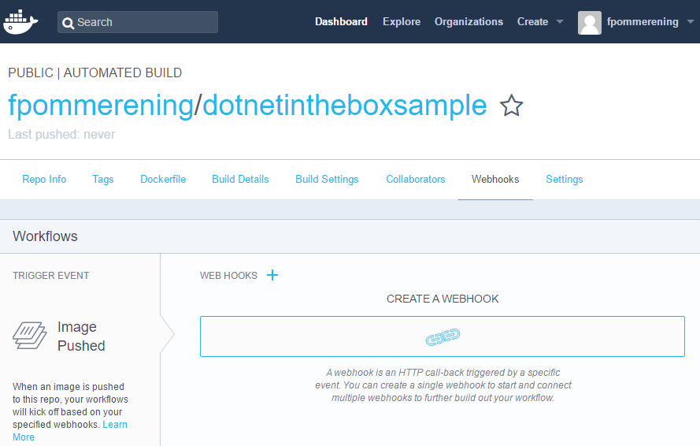- Login beim Docker Hub
- Auswahl des Repository
- Webhooks -> Create a Webhook
- Name und Ziel-URL festlegen
- Speichern